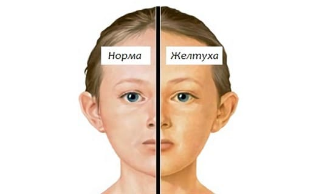
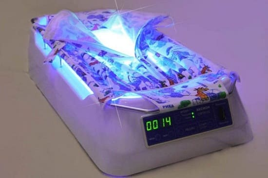
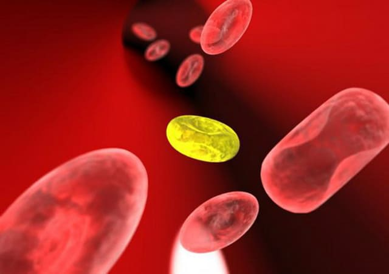

Практически все дети желтеют к 3—4-му дню жизни, и это не обязательно плохой признак. Желтый пигмент (называемый билирубин) образуется в крови ребенка в течение нескольких первых дней жизни в результате распада избыточного количества красных кровяных клеток- эритроцитов, которые образовались на этапе развития плода. Когда ребенок родился, лишние кровяные клетки ему уже не нужны, и они начинают разрушаться. Тем не менее, если желтого пигмента образуется слишком много, это плохо сказывается на мозге. К счастью, почки и печень ребенка начинают уничтожать билирубин на 4-й или 5-й день, и желтуха пропадает примерно к 10-му дню. Но родителям нелегко определить, когда желтуха становится слишком сильной. Здесь даны наши советы, как разобраться в желтухе и определить, когда стоит отвезти ребенка к врачу по этому вопросу.
КОГДА БЕСПОКОИТЬСЯ
У большинства детей желтушность не проявляется, пока они не приедут из больницы домой (3—4-й день). Вот как вы можете опередить, что желтуха у вашего ребенка стала угрожающей.
Желтушность в первые 48 часов. При рождении цвет кожи у детей — смесь оттенков розового, белого и светло-коричневого. Если вы заметили малейшие оттенки желтого цвета в первые два дня, это может быть признаком того, что билирубина образуется слишком много (это может быть при гемолитической болезни новорожденного).
Желтушность быстро становится выраженной. Желтый цвет обычно начинает появляться на лице примерно на 3-й день, затем на 4-й день она переходит ниже на грудь и на 5-й день — на живот. На этом этапе белки глаз тоже желтеют. Затем желтый пигмент начинает выводиться из организма, и желтушность уменьшается. Если желтушность вашего ребенка «опускается» быстрее, чем в нашем описании (например, глаза и живот выглядят ярко-желтыми к 3—4-му дню), немедленно отправляйтесь к врачу.
Возрастающая сонливость и плохой аппетит. Кажется, что все новорожденные только едят и спят. Но по мере того как проходят дни, продолжительность бодрствования и интерес к кормлению должны увеличиваться. Слишком большое количество билирубина в кровотоке может сделать новорожденного сонным и снизить его аппетит.
Недоношенные дети. Дети, рожденные ранее 37-й недели беременности, более склонны к развитию выраженной и длительной желтухи. Повнимательнее наблюдайте за ними.
Кефалогематома. Дети с кефалогематомой (поднадкостничное кровоизлияние в теменных областях головы) более склонны к быстрому развитию желтухи. В кефалогематоме скапливается кровь, и она будет источником большого количества билирубина.
ЛЕЧЕНИЕ
Лечение зависит от того, насколько высок уровень билирубина, сколько дней ребенку и присутствуют ли какие-либо другие факторы риска. Вот что вы можете ожидать в следующие несколько дней.
Измерение уровня билирубина. Если вы все еще находитесь в больнице (что может быть почти у всех детей с кефалогематомой), медсестра может использовать чрескожный билирубиновый монитор для измерения уров ня билирубина путем простого прикладывания маленького зонда к коже. Анализ крови более точен, и, возможно, именно его возьмут у ребенка, если он уже выписался из больницы. Необходимо начинать лечение, если уровень билирубина у ребенка превосходит следующие значения:
Благоразумно начинать лечение при более низких уровнях билирубина, чем эти, в зависимости от здоровья ребенка и других факторов. Хотя вышеуказанные уровни абсолютно безопасны для ребенка, если они поднялись так высоко в таком раннем возрасте, это может означать, что желтуха развивается слишком быстро и, если ее не лечить, может достигнуть опасного уровня, что способно привести к повреждению головного мозга. Какое количество билирубина является слишком большим? Доношенные дети, вероятно, могут без вреда выдержать максимальный уровень билирубина примерно на отметке 25 мкмоль/л. Тем не менее мы предпочитаем не позволять ему подниматься так высоко, поэтому стараемся держать его в пределах до 20 мкмоль/л.
Проверка групп крови матери и отца. Если группа крови ребенка и резус-фактор отличаются от крови матери, это может вызвать ускоренное разрушение лишних красных кровяных клеток, спровоцировать раннюю желтуху с высоким уровнем билирубина. Для проверки можно сделать анализ крови, и, если подозрение подтвердится, понадобится быстро принимать меры.
Фототерапия. Главная идея использования света против желтушности — круглосуточное облучение кожи младенца светом специальных голубых ламп. Свет изменяет свойства билирубина, и пигмент становится нетоксичным для ребенка.

Существуют два способа проведения фототерапии:
Детей с выраженной желтухой госпитализируют и проводят фототерапию в кювезах. Детей, у которых не настолько высокий уровень билирубина, можно отправить на домашнее лечение с использованием билирубинового одеяла и ежедневным наблюдением приходящей на дом участковой медсестры.
Увеличение поступления жидкости. Младенцы, которых кормят грудью, как правило, не получают достаточно грудного молока до 4—5-го дня. Это ставит врача перед дилеммой, если желтуха развивается у младенцев младше 3 дней.
СОВЕТ ДОКТОРОВ СИРС: МОЖЕТ ЛИ ГРУДНОЕ МОЛОКО ВЫЗЫВАТЬ ЖЕЛТУХУ Существуют два способа развития желтухи у детей, вскармливаемых грудью. Один называется желтухой естественного вскармливания, при которой ребенок становится более желтым из-за того, что не получает вовремя и в достаточном количестве материнского молока. В этом случае на самом деле усиление желтухи вызывает не грудное молоко, а то, что младенец временно получает меньше молока, чем кормящийся из бутылочки, что способствует некоторому увеличению желтушности. Второй сценарий называется желтухой от грудного молока. В этом случае вещество, содержащееся в грудном молоке (полиненасыщенные жирные кислоты), действительно замедляет вывод билирубина из организма ребенка. Желтуха в этом случае сохраняется до 2—3 месяцев. Мамы, кормящие грудью, должны продолжать давать ребенку лучшее. Если желтуха не проходит или усугубляется в течение второй недели жизни, спросите у своего врача, не может ли это быть желтуха от грудного молока. |
Некоторые больницы или врачи настаивают на дополнительном кормлении смесями всех младенцев с желтухой. Но решать надо индивидуально, отдельно в каждом случае. Узнайте у врача, есть ли такая необходимость. Мы убедились, что большинство наших пациентов, вскармливаемых грудью, которые получают фототерапию дома с помощью билирубинового одеяла или в больнице, прекрасно обходятся без дополнительного питания, если мама чувствует, что к 4-му дню у нее появится достаточно молока.
ПРОФИЛАКТИКА
У большинства детей, которые выписывают из больницы в возрасте 2—3 дней, признаки желтухи только начинают проявляться. Измерение уровня билирубина — чрескожное или с помощью анализа крови — часто проводится раньше, чем появится повод для беспокойства. Такие дети должны посетить врача примерно через два дня для осмотра на желтуху. Вот что вы можете делать в течение нескольких следующих дней, чтобы держать желтуху ребенка под контролем.

СОЛНЕЧНАЯ ТЕРАПИЯ
• Расположите кроватку возле окна. Ребенок должен спать настолько раздетым, насколько позволяет температура воздуха, при этом солнце должно светить на него через оконное стекло. Хотя стекло отфильтровывает самые действенные лучи, это все же будет полезно. Даже непрямые солнечные лучи в облачный день помогают.
• Кормите ребенка у окна. Установите стул для кормления у большого, солнечного окна. Поскольку тепло вашего тела будет греть ребенка во время кормления, он может быть полностью обнажен (возможно, вы захотите не снимать подгузник) для максимального контакта с солнцем.
• Ходите на прогулку. Каждый день гуляйте на улице три раза по пятнадцать минут, чтобы на ребенка попадал прямой солнечный свет. При этом разденьте малыша, насколько это возможно, чтобы он не простудился. Это действительно поможет уменьшить желтушность.
Частые кормления. Хотя вы, возможно, уже это делаете, все равно постарайтесь кормить ребенка грудью как можно чаще. Если вы чувствуете, что молоко не появляется в достаточном количестве к 4—5-му дню, обратитесь за помощью к консультанту по грудному вскармливанию.
Здоровье ребенка от докторов Сирс / Сирс У. и др.